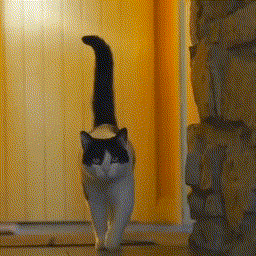

We present a method for joint alignment of sparse in-the-wild image collections of an object category.
Most prior works assume either ground-truth keypoint annotations or a large dataset of images of a single object category. However, neither of the above assumptions hold true for the long-tail of the objects present in the world. We present a self-supervised technique that directly optimizes on a sparse collection of images of a particular object/object category to obtain consistent dense correspondences across the collection.
We use pairwise nearest neighbors obtained from deep features of a pre-trained vision transformer (ViT) model as noisy and sparse keypoint matches and make them dense and accurate matches by optimizing a neural network that jointly maps the image collection into a learned canonical grid. Experiments on CUB and SPair-71k benchmarks demonstrate that our method can produce globally consistent and higher quality correspondences across the image collection when compared to existing self-supervised methods.
@article{gupta2023asic,
author = {Gupta, Kamal and Jampani, Varun and Esteves, Carlos and Shrivastava, Abhinav and Makadia, Abhinav and Snavely, Noah and Kar, Abhishek},
title = {ASIC: Aligning Sparse in-the-wild Image Collections},
journal = {arXiv},
year = {2023},
}